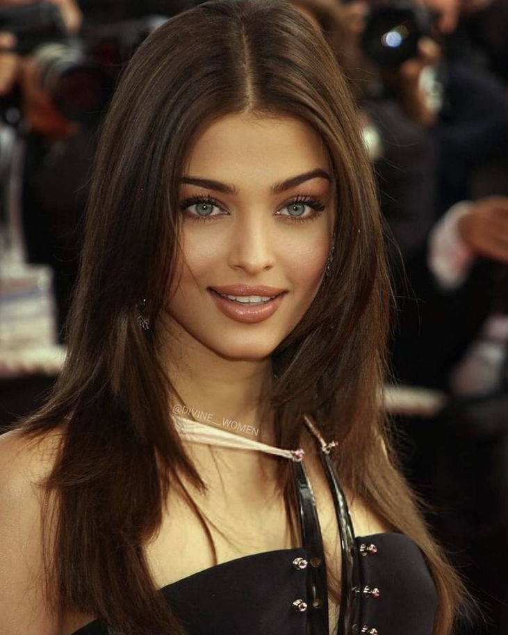

Born: 1 November 1973
"Elegance is not about being noticed, it's about being remembered."
Aishwarya Rai Bachchan is an acclaimed Indian actress, model, and former Miss World who has captivated audiences across the globe with her beauty, elegance, and talent. Born on 1st November 1973, she began her career as a model and gained international fame by winning the Miss World title in 1994. She transitioned into acting soon after and became one of the most popular and influential actresses in Indian cinema. Known for her roles in films like Devdas, Jodhaa Akbar, Guru, and Hum Dil De Chuke Sanam, Aishwarya has earned numerous awards and accolades. Apart from her film career, she is also recognized globally as a brand ambassador, a humanitarian, and a symbol of timeless grace. Her appearances at international events like the Cannes Film Festival have made her a global icon of Indian beauty and cinema.